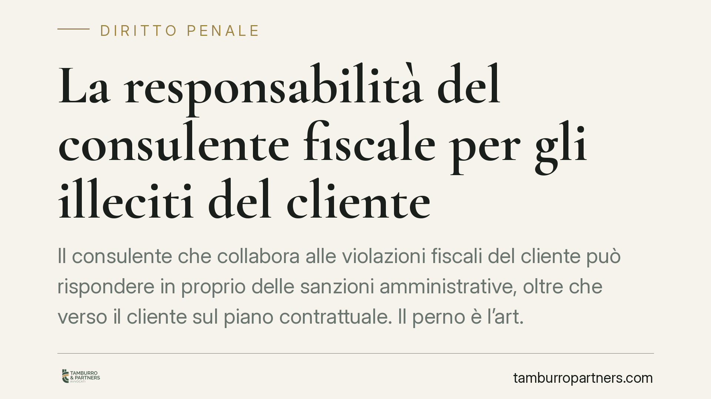

La responsabilità del consulente fiscale per gli illeciti del cliente
Il consulente che collabora alle violazioni fiscali del cliente può rispondere in proprio delle sanzioni amministrative, oltre che verso il cliente sul piano contrattuale. Il perno è l'art. 9 del D.lgs. 472/1997 sul concorso nella violazione. Ne derivano rischi concreti per commercialisti e consulenti, ma anche limiti precisi legati al profilo soggettivo della condotta.

Il fatto e perché conta
La posizione del consulente fiscale rispetto alle violazioni tributarie del cliente resta un tema delicato. Occorre tenere distinti due piani che spesso vengono confusi.
Da un lato c'è la responsabilità contrattuale verso il cliente: il professionista che esegue male l'incarico risponde dei danni secondo la diligenza qualificata richiesta dall'art. 1176, comma 2, c.c. (quella del buon professionista nel proprio settore).
Dall'altro c'è la responsabilità sanzionatoria diretta verso l'erario: il consulente che concorre nella violazione può essere destinatario in proprio della sanzione amministrativa tributaria. Sono due responsabilità autonome, con presupposti e destinatari diversi.
Inquadramento normativo
Il riferimento centrale è l'art. 9 del D.lgs. 472/1997, che disciplina il concorso di persone nella violazione tributaria: quando più soggetti concorrono in una medesima violazione, ciascuno soggiace alla sanzione per essa prevista. È su questa base che il consulente può essere chiamato a rispondere non come semplice ausiliario del contribuente, ma come coautore della condotta illecita.
Il profilo soggettivo è definito dall'art. 5 del D.lgs. 472/1997, che richiede dolo o colpa. Non basta l'esistenza oggettiva della violazione: occorre che al consulente sia addebitabile una condotta cosciente e volontaria, quanto meno negligente. Questo limite è decisivo, perché evita che il professionista diventi un garante assoluto della regolarità fiscale del cliente.
Va chiarito un possibile equivoco sull'art. 7 del DL 269/2003. Questa norma riferisce le sanzioni amministrative relative al rapporto fiscale della persona giuridica esclusivamente all'ente, e non alle persone fisiche che agiscono per esso. Non riguarda però il consulente esterno che concorre nell'illecito: la sua posizione resta governata dal concorso ex art. 9 D.lgs. 472/1997. In altre parole, la riferibilità della sanzione all'ente non neutralizza la responsabilità propria del professionista che abbia attivamente contribuito alla violazione.
Profilo penale (eventuale)
Quando la condotta del consulente travalica l'illecito amministrativo e integra un reato tributario (ad esempio dichiarazione fraudolenta o emissione di fatture per operazioni inesistenti ai sensi del D.lgs. 74/2000), può configurarsi il concorso di persone nel reato ex art. 110 c.p. Si tratta di un piano distinto e più grave, che richiede l'accertamento dell'elemento soggettivo penalmente rilevante. Anche qui vale il principio di fondo: la responsabilità segue il contributo cosciente e volontario alla condotta illecita, non la mera assistenza professionale.
Implicazioni pratiche
Per il commercialista o il consulente fiscale il messaggio operativo è chiaro: l'adempimento diligente dell'incarico non si esaurisce nel dato formale. Condotte omissive, controlli superficiali o l'esecuzione acritica di istruzioni palesemente anomale del cliente possono integrare il profilo di colpa rilevante.
Non è invece necessario, ai fini della responsabilità sanzionatoria, che il professionista abbia tratto un vantaggio personale dalla violazione. Conta il contributo alla condotta, valutato sul piano del dolo o della colpa.
Resta però il limite già ricordato: senza un addebito soggettivo concreto, la responsabilità diretta non sorge. Il consulente che documenta le proprie segnalazioni e il proprio dissenso dispone di uno strumento difensivo solido.
Cosa fare in concreto
- Tracciate le istruzioni: conservate per iscritto le indicazioni ricevute dal cliente e i vostri pareri, soprattutto quando emergono scelte fiscali rischiose.
- Eseguite un controllo di plausibilità: verificate la coerenza dei dati e documentate le anomalie rilevate, con la relativa segnalazione al cliente.
- Formalizzate il recesso: davanti a richieste che implicano violazioni, comunicate per iscritto il dissenso e, se necessario, recedete dall'incarico documentando la decisione.
- Rivedete i mandati professionali: definite con chiarezza l'oggetto dell'incarico, i limiti della prestazione e le responsabilità reciproche.
- Valutate una copertura assicurativa adeguata: verificate che la polizza professionale copra effettivamente i profili sanzionatori e di responsabilità connessi all'attività svolta.
*Contributo informativo a cura di Tamburro & Partners - Avv. Giuseppe Tamburro. Non costituisce parere legale.*
Ogni condominio ha una storia a sé.
Se gestisci un'amministrazione e vuoi un confronto su una specifica questione condominiale, scrivi allo studio. Ti rispondiamo entro un giorno lavorativo.